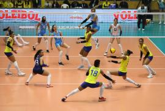

La sede del torneo será Bogotá y desde ya se viven las emociones.
La I Superliga Femenina de Voleibol, es fruto de un trabajo disciplinado y de confianza queha generado el presidente de la Federación Colombiana de Voleibol el Md. Néstor Raúl Useche y todo su equipo de trabajo, quienes, a partir de un esquema planificado, donde el crecimiento y la masificación es el objetivo principal, hoy brinda los primeros frutos para el país.
En próximas horas iniciara la I Superliga Femenina de Voleibol, evento que logró la participación de 10 equipos de diferentes regiones del país, una intervención satisfactoria y de gran apoyo por parte de esta comunidad, quienes con su intervención respaldan esta gestión, esta idea innovadora y, sobre todo, esta forma de construcción país. La a edificación de una nación, de los diversos proyectos deportivos exitosos y de esquemas de crecimiento como este, hacen necesario el trabajo en equipo, es por esto importante contarles a todos, la unión de esfuerzos que se gestó para este sueño, llamado: Superliga. Para iniciar el primer voto de confianza lo dio el Ministerio del Deporte, quienes aportaron los recursos para el desarrollo de este acontecimiento deportivo; de allí se unieron a este proyecto nacional tres grandes empresas. Por su parte Win Sports, decidió sumarse con su proyecto de televisión, permitiendo a través de un convenio entre la Federación y el Canal de todos los Deportes, la transmisión en exclusiva para todo el país. Sobre el tema, su presidente Jaime Parada, afirmó: ‘‘… En línea con nuestro propósito de ofrecer una pantalla multideportiva a los colombianos, hoy celebramos el hecho de poder formar parte de este hito deportivo tan importante para esta disciplina en Colombia. Con este convenio buscamos impulsar un deporte que, sin duda, empezará a ser protagonista en la agenda deportiva nacional a partir de ahora, gracias a la visibilidad que tendrá a lo largo del país, lo cual le permitirá ampliar las posibilidades de comercialización…’ ’La inversión de va más allá de la transmisión en sí, puesto que, esta organización responsable de los deportistas y sus colaboradores, han determinado estar dentro de la burbuja con todas las medidas necesarias y dictadas por el ente deportivo, para así, seguir respaldando el proceso, continuar con ese camino de resultados y generar con ejemplo, un ambiente de comprensión donde se pueden hacer la inversión y el apoyo con responsabilidad. Por su parte, la nutricionisa Liliana Orozco, Líder de Mercadeo Deportivo y Profesional para Gatorade Colombia, afirmó: “Nuestra bebida se une a la I Superliga de Voleibol femenino como bebida hidratante oficial, porque creemos que eventos como estos son claves para dar visibilidad al esfuerzo y dedicación de las deportistas que participan de lasdiferentes regiones del país. Nosotros estaremos garantizando su hidratación durante todo el evento con la bebida hidratante no. 1 del mundo. De igual manera, estamos uniéndonos a una Federación que busca ayudar al crecimiento del deporte, por lo que nosotros, estamos apoyando la promoción de este deporte de conjunto en las nuevas generaciones". Entre tanto, Blanca Durán, directora del Instituto Distrital de Recreación y Deporte – IDRD, declaró: “ Bogotá está de fiesta porque recibimos el primer torneo profesional de la liga de voleibol femenino en el Cayetano Cañizares, esperamos que este campeonato inspire a muchas más personas, sobre todo mujeres, a que practiquen el voleibol, para que sean parte del Equipo Bogotá”.